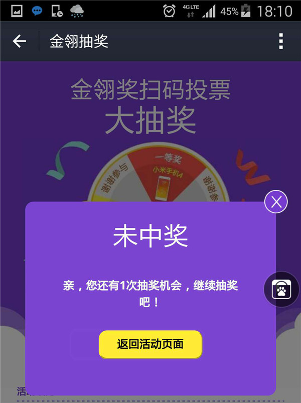

2015金翎奖玩家投票正式启动，超值大奖等你来拿
发布日期：2015年10月14日
2015年“金翎奖”年度优秀游戏评选大赛延续十年荣耀，即将盛情起航！近年来，基于中国庞大的互联网用户市场，以及巨大的互动娱乐产业潜力，同时伴随着游戏行业逐步泛娱乐化，带动游戏企业在国内乃至国际上掀起一轮又一轮的游戏娱乐风暴。作为始终被誉为游戏行业奥斯卡的“金翎奖”年度优秀游戏评选大赛秉承充分体现玩家真实意志的原则，历经十年荣耀，即将再次拉开新的篇章！
第十届“金翎奖”报名已于日前截止，此次总共拥有超过500款的游戏报名参赛，报名企业及游戏数量均创历史最高。仅移动游戏类奖项参评游戏近400款，超过去年所有参评游戏数量。同时奖项的评定也将延续往届风格，由全国超过500万真实玩家投票方式评选出最终的获奖作品，其评选结果真实且具有客观代表性，一方面鼓励了游戏企业不断推陈出新，另一方面也起到了连接游戏企业与玩家之间的纽带作用。
玩家评委们参与投票，即有机会获邀参加2016年1月在厦门举办的“金翎奖”颁奖盛典，更有机会抽取包括iPhone6S、Applewatch等在内的超值大奖。
2015金翎奖官方网站：http://jlj.chinajoy.net
投票时间
2015年10月12日12:00至11月16日12:00
如何投票
1.扫描二维码下载支付宝钱包。
2.登陆金翎奖官网：http://jlj.chinajoy.net，点选支持的游戏图标进入投票区，使用手机支付宝钱包扫描对应游戏二维码进行投票，每票人民币1元，投票成功后获得一次抽奖机会。
（注：同一个支付宝账号投票期最多投票数为500票，多投多抽，中奖后该二维码只可用于投票，不再参与抽奖）
3.投票完成后出现付款成功页面，安卓用户点击下方金翎奖广告图即可跳转抽奖页面；iOS用户点击支付宝菜单栏“朋友”―“消息中心”―“通知”即可找到抽奖页面入口。
（安卓用户入口）
（iOS用户入口）
4.进入抽奖页面点击“立即抽奖”。(抽奖机会和投票次数等同，抽奖机会可累计，整个投票期同一用户抽奖次数最多500次。)

奖品发放
获得虚拟奖品如“话费红包”，可按照提示进入“财富”―“卡包”―“券”查看；
获得实物奖品如“小米note”，工作人员将会尽快与获奖支付宝账户绑定的手机号联系，请获奖用户保持手机畅通。
奖项设置
网络游戏类：
玩家最喜爱的网络游戏
玩家最期待的网络游戏
最佳原创网络游戏
最佳境外网络游戏
网页游戏类：
玩家最喜爱的网页游戏
玩家最期待的网页游戏
移动游戏类：
玩家最喜爱的移动单机游戏
玩家最喜爱的移动网络游戏
最佳原创移动游戏
最佳境外移动游戏
玩家最期待的移动单机游戏
玩家最期待的移动网络游戏
最具影响力移动游戏发行商
最具影响力移动游戏渠道商
家用机游戏类：
玩家最期待的家用机游戏
游戏媒体类：
最佳游戏网络媒体
最佳游戏新媒体
最佳游戏视频媒体
新闻类：
最佳产业新闻奖
最佳产业评论奖
最佳专题报道奖